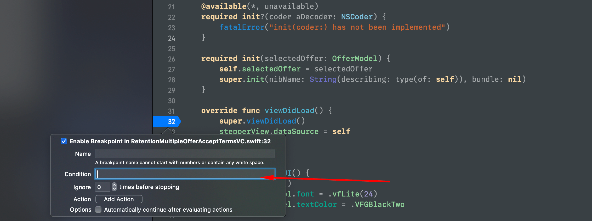

In computer programming and software development, debugging is the process of finding and resolving bugs within computer programs, software, or systems.
Although some people may love bugs (check this out), programmers hate them
Some bugs consume a lot of time which is really important if you want to be productive. In this blog post you will learn efficient techniques I use everyday as an iOS developer.
How to use XCode for debugging
XCode is the recommended IDE by Apple. While some people say that other alternatives exists, there is no room for doubt that XCode is the way to go!
XCode by default contains some debugging functionality that you can use. The most famous is the breakpoint which is used 99% of the time. Tip: Stop debugging code by using print statements because it is a bad habbit. print(result) // Never do that!!
Basics: Breadpoint debugging actions
Xcode comes with some functionalities after you hit a breakpoint. Most used of them are:
Skip Used for skipping a breakpoint
Step over For running the next line of code
Step into Used for going deeper inside a method
Step out Used for going outside a method
Advance: View debugging
View debugging is a feature Apple introduced. There is no such feature in Android yet which makes it really cool! What would you do if you create a custom view and the rendered result is diferrent than expected??
This is important because it helps you see what is going on in the view. See the picture below:
View debug from my-Vodafone app iOS
Tip: Use this to determine what is going wrong on rendering.
Advance: Conditional debugging
Did you know that you can add conditions to your breakpoint? It means that if a condition is true only then the breakpoint will be activated.
You can do this by right clicking in the breakpoint and writting your condition. That condition will be evaluated at runtime which will determine if the breakpoint will be activated
I use this really often when I am attaching a breakpoint in a loop

Image illustrating how to edit breakpointDebugging is more than finding bugs
It is really funny that some people underestimate the power of debugging.
Not only is debugging used for finding bugs but it can help you understand the code
Use breakpoints in your codebase and try to see what is changing and how. Believe me after this debugging will be your best friend!